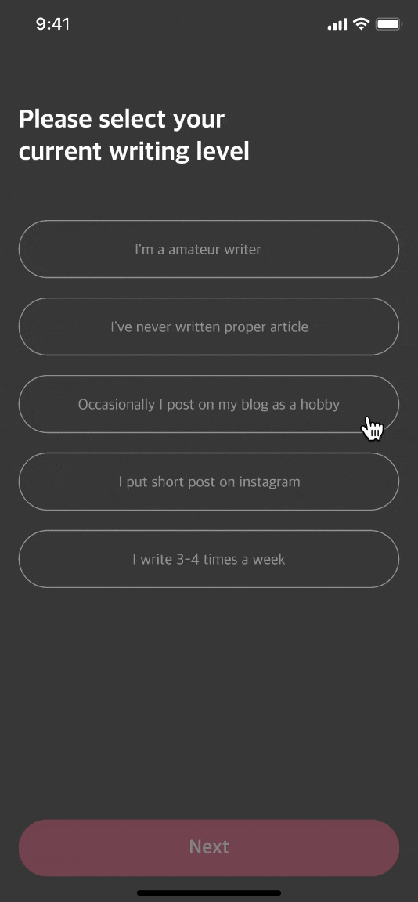
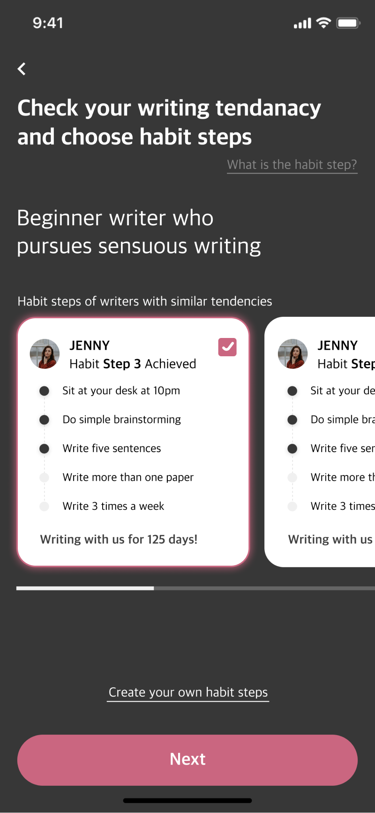
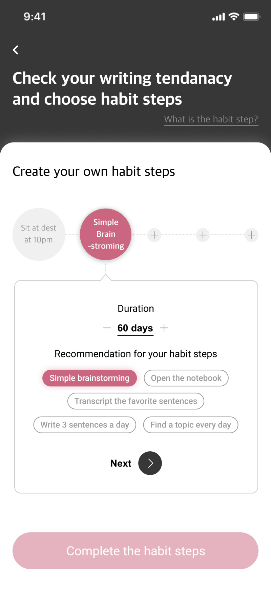
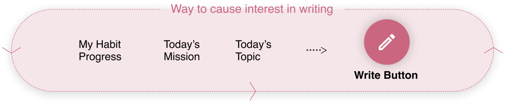
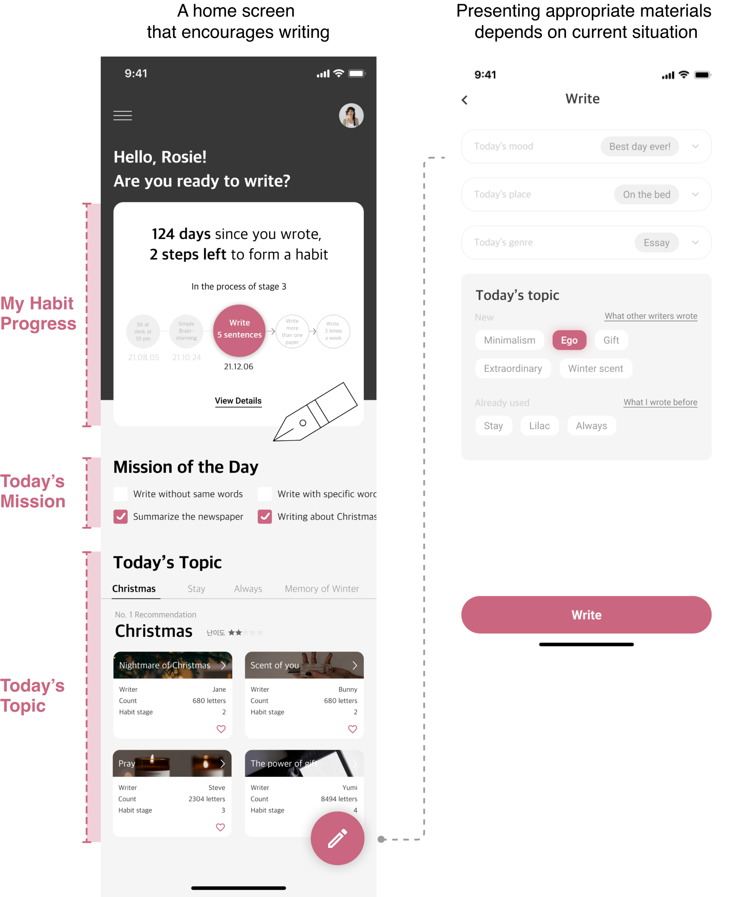
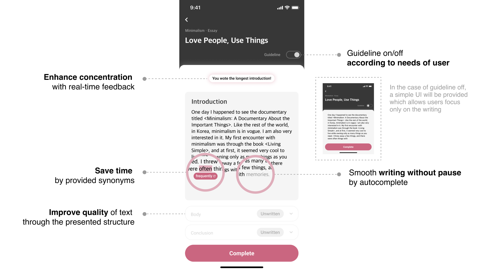
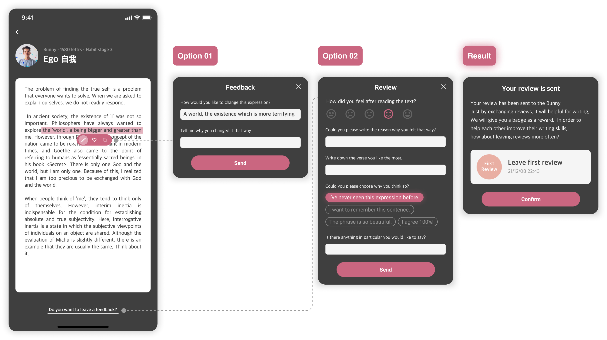
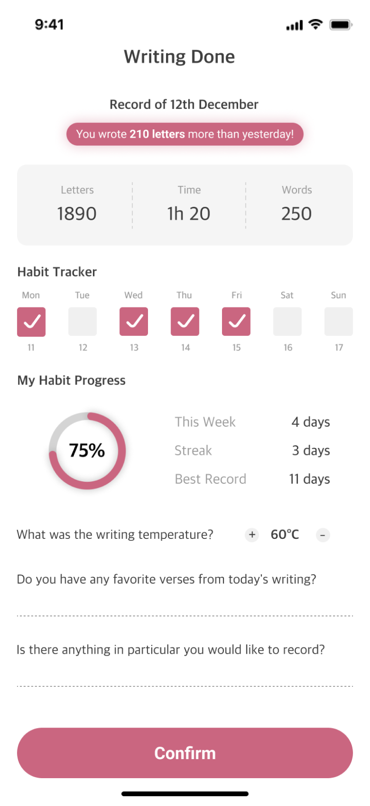
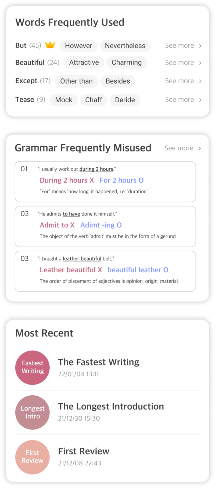
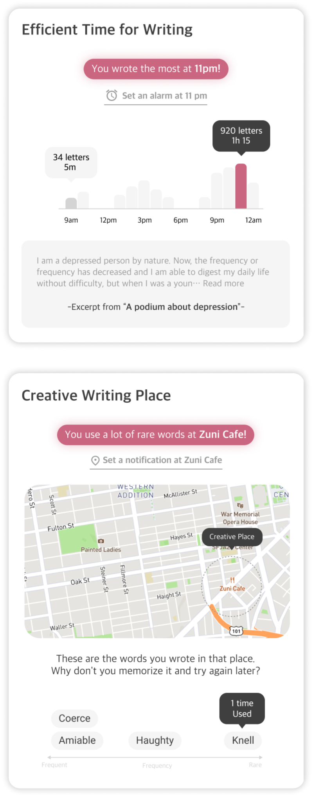

Output
1. Provides a trigger to start writing easily
◼ Form a personalized writing habit depends on the user
If it feels like a challenge when forming a new habit, it becomes very hard to maintain. Making the process of getting started easy is very effective in keeping up a habit. When it’s started with a slightly easier goal like 'sitting at your desk for five minutes' than 'write one post a day', it will be possible to build a solid foundation for maintaining the habit.
Step 1
Understanding my writing level and tendency
: An onboarding process for personalized recommendations, gathering information such as writing level, purpose, favoire genre, etc.
Step 2
Recommendation of habit steps which are appropriate for user
: Recommendation of writing habit steps (goals and procedures for habit formation) which are customized to user as a result of onboarding
Step 3
Create own habit steps
: If the recommended habit stage is not satisfactory, the user directly forms the habit stage in the desired way



◼ Screen composition that encourages users to write
Home screen is designed in such a way that users can naturally want to write something. In order to reduce the burden and time required for selecting a topic, the application recommend automatically the proper writing materials.


2. Provides a guideline in order to make out fine texts
◼ A system that allows users to be immersed in writing
As the writing continues, it helps users write “fine texts” rather than simple texts. It provides guidelines to maintain a constant flow of context, and enables users to write without interruption through real-time feedback.

◼ Improving writing skills through feedback
When spending time with people who have similar habit, it’s easily become permanent. As users having similar writing habits interact with each other, the habits become strongly fixed to users.
Option 1
Short feedback to other users
Option 2
Share specific impression with people
Result
Get the rewards after sharing reviews and feedback

3. Motivation to keep writing consistently
◼ Immediate evaluation after completing texts
The more users understand their current state, the more opportunities they have to reach their goals. Through the analysis of their habits from various angles, users can focus on their strengths and make up for the weaknesses. In addition, with the feeling of private record book, it encourage not to quit the habit.


◼ Analysis and compensation provided through My Page
The most difficult reason to sustain a habit is that there is no immediate reward after practicing the habit. By providing quick analysis of the text and various rewards such as habit trackers and stamps after completing the text, it makes users look forward to next writing session.


